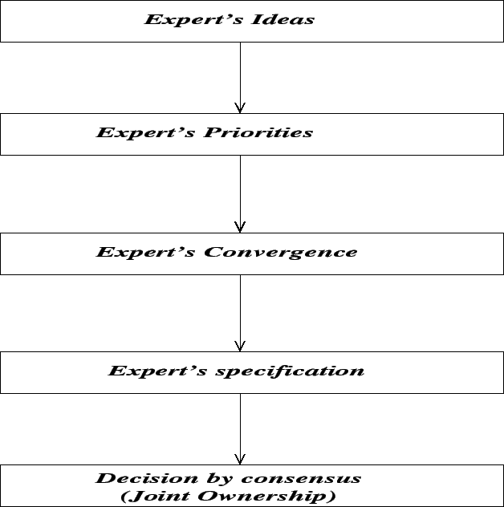

Next: Protocol Analysis (Think-Aloud Method)
Up: Some Knowledge Capturing Techniques
Previous: Brainstorming
Contents
- Is is a computer-aided approach for dealing with multiple experts.
- It usually begins with a pre-session plan which identifies objectives
and structures the agenda, which is then presented to the experts for
approval.
- During the session, each expert sits on a PC and get themselves
engaged in a predefined approach towards resolving an issue, and then
generates ideas.
- This allows experts to present their opinions through their PC's
without having to wait for their turn.
- Usually the comments/suggestions are displayed electronically
on a large screen without identifying the source.
- This approach protects the introvert experts and prevents tagging
comments to individuals.
- The benefit includes improved communication, effective discussion
regarding sensitive issues, and closes the meeting with concise
recommendations for necessary action (refer to Figure 5.1
for the sequence of steps).
- This eventually leads to convergence of ideas and helps to set final
specifications.
- The result is usually the joint ownership of the solution.
Figure 5.1:
The process of brainstorming
|

|
Next: Protocol Analysis (Think-Aloud Method)
Up: Some Knowledge Capturing Techniques
Previous: Brainstorming
Contents
Knowledge Management Systems
2004-11-01